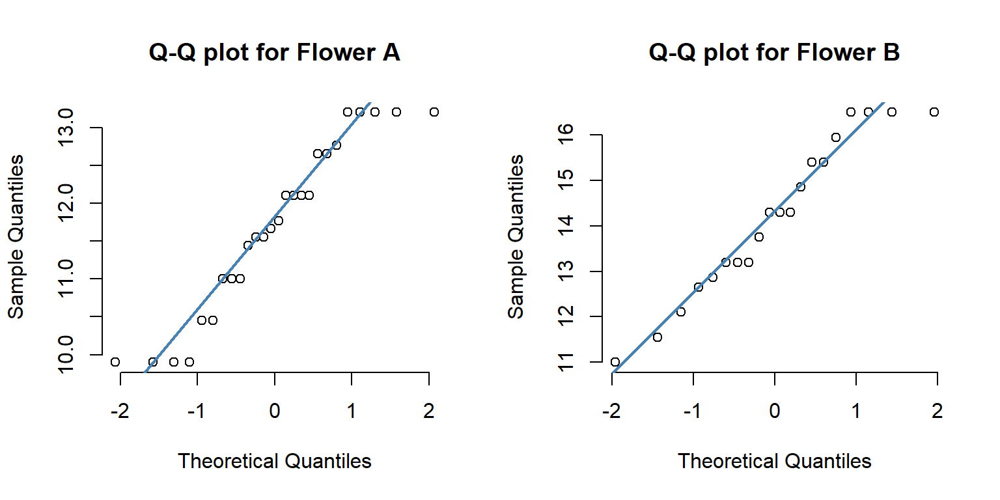
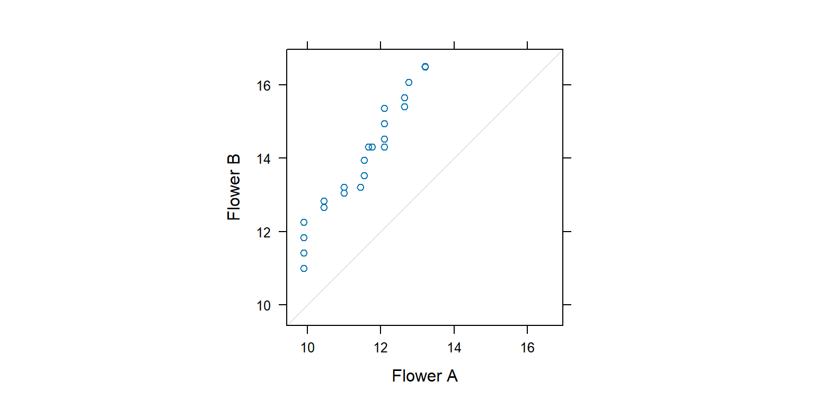

A t-test (also known as Student’s t-test) is a tool for evaluating the means of one or two populations using hypothesis testing. A t-test may be used to evaluate whether a single group differs from a known value (a one-sample t-test), whether two groups differ from each other (an independent two-sample t-test), or whether there is a significant difference in paired measurements (a paired, or dependent samples t-test).
How are t-tests used?
First, you define the hypothesis you are going to test and specify an acceptable risk of drawing a faulty conclusion. For example, when comparing two populations, you might hypothesize that their means are the same, and you decide on an acceptable probability of concluding that a difference exists when that is not true. Next, you calculate a test statistic from your data and compare it to a theoretical value from a t-distribution. Depending on the outcome, you either reject or fail to reject your null hypothesis.
What if I have more than two groups?
You cannot use a t-test. Use a multiple comparison method. Examples are analysis of variance (ANOVA), Tukey-Kramer pairwise comparison, Dunnett’s comparison to a control, and analysis of means (ANOM).
9.0.0.2Bước 2: Đề bài về so sánh hai loài hoa qua các chỉ tiêu định lượng để tìm ra sự khác biệt bằng kiểm định t-test
9.0.0.2.1Bước 2.1: Đặt giả thuyết thống kê cho kiểm định t-test 2 đuôi
\({H_0}\) : Trung bình tổng thể giữa hai mẫu không khác nhau về chỉ tiêu quan tâm \(\mu_1 = \mu_2\)
\({H_\alpha }\) : Trung bình tổng thể giữa hai mẫu khác nhau về chỉ tiêu quan tâm \(\mu_1 \ne \mu_2\)
# A tibble: 2 × 6
Species count mean sd median IQR
<fct> <int> <dbl> <dbl> <dbl> <dbl>
1 Flower A 26 11.7 1.14 11.7 1.65
2 Flower B 20 14.2 1.73 14.3 2.42
Nếu thực hiện tính toán các chỉ số thống kê cho lần lượt các cột trong data frame thì ta sẽ áp dụng lệnh họ apply.
### khi sử dụng function với các lệnh trong dplyr thì bạn cần lưu ý quote string tham số # https://shixiangwang.github.io/tidyeval-chinese/dplyr.html# https://stackoverflow.com/questions/67382081/how-to-pass-column-name#-as-argument-to-function-for-dplyr-verbsthong_ke_mo_ta <-function(input, group_input, chi_tieu) { input |>group_by(.data[[group_input]]) %>%summarise(count =n(),mean =mean(.data[[chi_tieu]], na.rm =TRUE),sd =sd(.data[[chi_tieu]], na.rm =TRUE),median =median(.data[[chi_tieu]], na.rm =TRUE),IQR =IQR(.data[[chi_tieu]], na.rm =TRUE) ) -> df_okreturn(df_ok)}lapply(names(flower)[-1], FUN = thong_ke_mo_ta,input = flower, group_input ="Species") -> oknames(ok) <-names(flower)[-1]ok
$LBL
# A tibble: 2 × 6
Species count mean sd median IQR
<fct> <int> <dbl> <dbl> <dbl> <dbl>
1 Flower A 26 11.7 1.14 11.7 1.65
2 Flower B 20 14.2 1.73 14.3 2.42
$LBW
# A tibble: 2 × 6
Species count mean sd median IQR
<fct> <int> <dbl> <dbl> <dbl> <dbl>
1 Flower A 26 3.61 0.655 3.85 0.852
2 Flower B 20 3.55 0.196 3.52 0.33
$LBAR
# A tibble: 2 × 6
Species count mean sd median IQR
<fct> <int> <dbl> <dbl> <dbl> <dbl>
1 Flower A 26 3.63 0.488 3.45 0.446
2 Flower B 20 4.39 0.361 4.45 0.528
$LBC
# A tibble: 2 × 6
Species count mean sd median IQR
<fct> <int> <dbl> <dbl> <dbl> <dbl>
1 Flower A 26 0.619 0.0404 0.627 0.0413
2 Flower B 20 0.554 0.0286 0.55 0.0440
$PL
# A tibble: 2 × 6
Species count mean sd median IQR
<fct> <int> <dbl> <dbl> <dbl> <dbl>
1 Flower A 26 0.753 0.115 0.792 0.151
2 Flower B 20 0.708 0.106 0.66 0.127
$CTL
# A tibble: 2 × 6
Species count mean sd median IQR
<fct> <int> <dbl> <dbl> <dbl> <dbl>
1 Flower A 26 0.248 0.0195 0.242 0.033
2 Flower B 20 0.180 0.0366 0.182 0.0467
$CLL
# A tibble: 2 × 6
Species count mean sd median IQR
<fct> <int> <dbl> <dbl> <dbl> <dbl>
1 Flower A 26 0.425 0.0544 0.44 0.077
2 Flower B 20 1.10 0.155 1.07 0.248
Từ chỗ này trở đi ta sẽ tính riêng chỉ tiêu “LBL” cho “Flower A” và “Flower B”. Các chỉ tiêu còn lại thực hiện tương tự.
Giả thuyết cho t-test 1 sample
While t-tests are relatively robust to deviations from assumptions, t-tests do assume that:
The data are continuous.
The sample data have been randomly sampled from a population.
The distribution is approximately normal.
There is homogeneity of variance (i.e., the variability of the data in each group is similar).
the standard Student’s t-test, which assumes that the variance of the two groups are equal.
the Welch’s t-test, which is less restrictive compared to the original Student’s test. This is the test where you do not assume that the variance is the same in the two groups, which results in the fractional degrees of freedom.
For two-sample t-tests, we must have independent samples. If the samples are not independent, then a paired t-test may be appropriate. \(\Rightarrow\) Trong dataset này thì đây là 2 mẫu độc lập, unpaired
Data values must be independent. Measurements for one observation do not affect measurements for any other observation. \(\Rightarrow\) OK
Data in each group must be obtained via a random sample from the population. \(\Rightarrow\) OK
Data in each group are normally distributed.
Data values are continuous. \(\Rightarrow\) OK
The variances for the two independent groups are equal.
9.0.0.3.1Bước 3.1: Thực hiện kiểm tra giả thuyết về phân bố chuẩn
Cách 1: Sử dụng Q-Q plot
Q-Q plot cho theo từng group.
# test cho toàn bộ các group# qqnorm(flower$LBL, pch = 1, frame = FALSE)# qqline(flower$LBL, col = "steelblue", lwd = 2)par(mfrow =c(1, 2))flower |>subset(Species =="Flower A") -> flower_aqqnorm(flower_a$LBL, pch =1, frame =FALSE, main ="Q-Q plot for Flower A")qqline(flower_a$LBL, col ="steelblue", lwd =2)flower |>subset(Species =="Flower B") -> flower_bqqnorm(flower_b$LBL, pch =1, frame =FALSE, main ="Q-Q plot for Flower B")qqline(flower_b$LBL, col ="steelblue", lwd =2)

Quantile-Quantile plots for comparing two Distributions
lattice::qq(Species ~ LBL, aspect =1, data = flower,subset = (Species =="Flower A"| Species =="Flower B"))

Cách 2: Shapiro-Wilk Test for Normality (sample size must be between 3 and 5000)
shapiro.test(x = flower_a$LBL)
Shapiro-Wilk normality test
data: flower_a$LBL
W = 0.91731, p-value = 0.0389
shapiro.test(x = flower_b$LBL)
Shapiro-Wilk normality test
data: flower_b$LBL
W = 0.94162, p-value = 0.2572
Trong Shapiro–Wilk test thì p-value nhỏ hơn 0.05 thì KHÔNG có phân bố chuẩn (do đó vi phạm giả thuyết). p-value lớn hơn 0.05 thì CÓ phân bố chuẩn.
Cách 3: Two-sample Kolmogorov-Smirnov’s test for Normality
ks.test(flower_a$LBL, flower_b$LBL)
Exact two-sample Kolmogorov-Smirnov test
data: flower_a$LBL and flower_b$LBL
D = 0.60769, p-value = 0.0001406
alternative hypothesis: two-sided
Biện luận kết quả theo p-value của Kolmogorov-Smirnov’s test.
Tham khảo: https://en.wikipedia.org/wiki/Kolmogorov%E2%80%93Smirnov_test
9.0.0.3.2Bước 3.2: Thực hiện kiểm tra giả thuyết về khác biệt phương sai
We will check whether the variances across the two groups are same or not. Performs an F-test to compare the variances of two samples from normal populations.
There are different variance tests that can be used to assess the equality of variances. These include:
F-test: Compare the variances of two groups. The data must be normally distributed.
Bartlett’s test: Compare the variances of two or more groups. The data must be normally distributed.
Levene’s test: A robust alternative to the Bartlett’s test that is less sensitive to departures from normality.
Fligner-Killeen’s test: a non-parametric test which is very robust against departures from normality.
Cách 1: Áp dụng F-test
# The statistical hypotheses are:# # Null hypothesis (H0): the variances of the two groups are equal.# Alternative hypothesis (Ha): the variances are different.var.test(flower_a$LBL, flower_b$LBL)
F test to compare two variances
data: flower_a$LBL and flower_b$LBL
F = 0.43625, num df = 25, denom df = 19, p-value = 0.05311
alternative hypothesis: true ratio of variances is not equal to 1
95 percent confidence interval:
0.1787345 1.0114015
sample estimates:
ratio of variances
0.4362495
Interpretation. The p-value is p = 0.05311 which is greater than the significance level 0.05. In conclusion, there is no significant difference between the two variances.
p-value lớn hơn 0.05 nên bác bỏ H1 chấp nhận H0, tức là phương sai của hai nhóm này không khác biệt nhau.
Cách 2: Bartlett’s test with one independent variable
bar_test <-bartlett.test(LBL ~ Species, data = flower)bar_test
Bartlett test of homogeneity of variances
data: LBL by Species
Bartlett's K-squared = 3.6638, df = 1, p-value = 0.05561
p-value lớn hơn 0.05 nên bác bỏ H1 chấp nhận H0, tức là phương sai của hai nhóm này không khác biệt nhau.
Cách 3: Áp dụng Levene’s test
library(car)leveneTest(LBL ~ Species, data = flower)
Levene's Test for Homogeneity of Variance (center = median)
Df F value Pr(>F)
group 1 4.3445 0.04297 *
44
---
Signif. codes: 0 '***' 0.001 '**' 0.01 '*' 0.05 '.' 0.1 ' ' 1
Trong Levene’s test thì p-value nhỏ hơn 0.05 thì CÓ sự khác biệt về phương sai giữa 2 nhóm. p-value lớn hơn 0.05 thì KHÔNG CÓ sự khác biệt về phương sai giữa 2 nhóm.
Cách 4: Áp dụng Fligner-Killeen’s test
The Fligner-Killeen’s test is one of the many tests for homogeneity of variances which is most robust against departures from normality.
fligner.test(LBL ~ Species, data = flower)
Fligner-Killeen test of homogeneity of variances
data: LBL by Species
Fligner-Killeen:med chi-squared = 4.5799, df = 1, p-value = 0.03235
9.0.0.4Bước 3: Thực hiện kiểm định t-test
Recall that, by default, R computes the Welch t-test, which is the safer one. This is the test where you do not assume that the variance is the same in the two groups, which results in the fractional degrees of freedom. If you want to assume the equality of variances (Student t-test), specify the option var.equal = TRUE.
Welch Two Sample t-test
data: LBL by Species
t = -5.6306, df = 31.22, p-value = 3.44e-06
alternative hypothesis: true difference in means between group Flower A and group Flower B is not equal to 0
95 percent confidence interval:
-3.420793 -1.601976
sample estimates:
mean in group Flower A mean in group Flower B
11.68962 14.20100
Two Sample t-test
data: LBL by Species
t = -5.934, df = 44, p-value = 4.219e-07
alternative hypothesis: true difference in means between group Flower A and group Flower B is not equal to 0
95 percent confidence interval:
-3.364333 -1.658436
sample estimates:
mean in group Flower A mean in group Flower B
11.68962 14.20100
Trường hợp nếu không thỏa điều kiện cho phân tích t-test thì ta áp dụng two-samples Wilcoxon test.
The unpaired two-samples Wilcoxon test (also known as Wilcoxon rank sum test or Mann-Whitney test) is a non-parametric alternative to the unpaired two-samples t-test, which can be used to compare two independent groups of samples. It’s used when your data are not normally distributed.
9.0.0.5Bước 4: Tính effect size
Salvatore S. Mangiafico. Summary and Analysis of Extension Program Evaluation in R. https://rcompanion.org/documents/RHandbookProgramEvaluation.pdf
Cohen’s d can be used as an effect size statistic for a two-sample t-test. It is calculated as the difference between the means of each group, all divided by the pooled standard deviation of the data.
It ranges from 0 to infinity, with 0 indicating no effect where the means are equal. In some versions, Cohen’s d can be positive or negative depending on which mean is greater.
A Cohen’s d of 0.5 suggests that the means differ by one-half the standard deviation of the data. A Cohen’s d of 1.0 suggests that the means differ by one standard deviation of the data.
library(lsr)lsr::cohensD(LBL ~ Species, data = flower)
[1] 1.764908
9.0.0.6Bước 5: Kiểm tra giả thuyết cho t-test cho cùng lúc nhiều cột
Ta cần chuyển dữ liệu về dạng long để thuận tiện xử lý và vẽ đồ thị.
# Transform the data into long format# Put all variables in the same column except `Species`, the grouping variablemydata <- flowermydata.long <- mydata %>%pivot_longer(-Species, names_to ="variables", values_to ="value")mydata.long <-as.data.frame(mydata.long)mydata.long
Species variables value
1 Flower A LBL 11.000
2 Flower A LBW 3.300
3 Flower A LBAR 3.663
4 Flower A LBC 0.616
5 Flower A PL 0.770
6 Flower A CTL 0.220
7 Flower A CLL 0.352
8 Flower A LBL 9.900
9 Flower A LBW 2.200
10 Flower A LBAR 4.950
11 Flower A LBC 0.517
12 Flower A PL 0.550
13 Flower A CTL 0.253
14 Flower A CLL 0.385
15 Flower A LBL 10.450
16 Flower A LBW 2.750
17 Flower A LBAR 4.180
18 Flower A LBC 0.572
19 Flower A PL 0.605
20 Flower A CTL 0.275
21 Flower A CLL 0.385
22 Flower A LBL 11.550
23 Flower A LBW 3.300
24 Flower A LBAR 3.850
25 Flower A LBC 0.594
26 Flower A PL 0.792
27 Flower A CTL 0.220
28 Flower A CLL 0.330
29 Flower A LBL 12.100
30 Flower A LBW 3.850
31 Flower A LBAR 3.454
32 Flower A LBC 0.627
33 Flower A PL 0.825
34 Flower A CTL 0.231
35 Flower A CLL 0.352
36 Flower A LBL 13.200
37 Flower A LBW 3.850
38 Flower A LBAR 3.773
39 Flower A LBC 0.605
40 Flower A PL 0.880
41 Flower A CTL 0.220
42 Flower A CLL 0.330
43 Flower A LBL 13.200
44 Flower A LBW 4.400
45 Flower A LBAR 3.300
46 Flower A LBC 0.649
47 Flower A PL 0.880
48 Flower A CTL 0.253
49 Flower A CLL 0.418
50 Flower A LBL 9.900
51 Flower A LBW 3.300
52 Flower A LBAR 3.300
53 Flower A LBC 0.649
54 Flower A PL 0.550
55 Flower A CTL 0.275
56 Flower A CLL 0.462
57 Flower A LBL 11.550
58 Flower A LBW 3.850
59 Flower A LBAR 3.300
60 Flower A LBC 0.649
61 Flower A PL 0.825
62 Flower A CTL 0.242
63 Flower A CLL 0.440
64 Flower A LBL 12.100
65 Flower A LBW 4.180
66 Flower A LBAR 3.179
67 Flower A LBC 0.660
68 Flower A PL 0.825
69 Flower A CTL 0.264
70 Flower A CLL 0.495
71 Flower A LBL 13.200
72 Flower A LBW 4.400
73 Flower A LBAR 3.300
74 Flower A LBC 0.649
75 Flower A PL 0.825
76 Flower A CTL 0.242
77 Flower A CLL 0.440
78 Flower A LBL 10.450
79 Flower A LBW 3.300
80 Flower A LBAR 3.487
81 Flower A LBC 0.627
82 Flower A PL 0.605
83 Flower A CTL 0.231
84 Flower A CLL 0.418
85 Flower A LBL 9.900
86 Flower A LBW 2.200
87 Flower A LBAR 4.950
88 Flower A LBC 0.517
89 Flower A PL 0.550
90 Flower A CTL 0.220
91 Flower A CLL 0.330
92 Flower A LBL 11.000
93 Flower A LBW 2.750
94 Flower A LBAR 4.400
95 Flower A LBC 0.550
96 Flower A PL 0.660
97 Flower A CTL 0.275
98 Flower A CLL 0.495
99 Flower A LBL 12.100
100 Flower A LBW 3.850
101 Flower A LBAR 3.454
102 Flower A LBC 0.627
103 Flower A PL 0.814
104 Flower A CTL 0.275
105 Flower A CLL 0.495
106 Flower A LBL 13.200
107 Flower A LBW 4.400
108 Flower A LBAR 3.300
109 Flower A LBC 0.649
110 Flower A PL 0.880
111 Flower A CTL 0.264
112 Flower A CLL 0.462
113 Flower A LBL 12.760
114 Flower A LBW 4.070
115 Flower A LBAR 3.454
116 Flower A LBC 0.638
117 Flower A PL 0.825
118 Flower A CTL 0.242
119 Flower A CLL 0.451
120 Flower A LBL 11.000
121 Flower A LBW 3.410
122 Flower A LBAR 3.553
123 Flower A LBC 0.627
124 Flower A PL 0.770
125 Flower A CTL 0.231
126 Flower A CLL 0.440
127 Flower A LBL 11.440
128 Flower A LBW 3.850
129 Flower A LBAR 3.267
130 Flower A LBC 0.649
131 Flower A PL 0.792
132 Flower A CTL 0.253
133 Flower A CLL 0.440
134 Flower A LBL 9.900
135 Flower A LBW 2.750
136 Flower A LBAR 3.960
137 Flower A LBC 0.583
138 Flower A PL 0.550
139 Flower A CTL 0.242
140 Flower A CLL 0.418
141 Flower A LBL 11.770
142 Flower A LBW 3.850
143 Flower A LBAR 3.366
144 Flower A LBC 0.638
145 Flower A PL 0.715
146 Flower A CTL 0.231
147 Flower A CLL 0.385
148 Flower A LBL 12.100
149 Flower A LBW 3.850
150 Flower A LBAR 3.454
151 Flower A LBC 0.627
152 Flower A PL 0.792
153 Flower A CTL 0.264
154 Flower A CLL 0.495
155 Flower A LBL 12.650
156 Flower A LBW 4.180
157 Flower A LBAR 3.333
158 Flower A LBC 0.649
159 Flower A PL 0.825
160 Flower A CTL 0.242
161 Flower A CLL 0.440
162 Flower A LBL 13.200
163 Flower A LBW 4.400
164 Flower A LBAR 3.300
165 Flower A LBC 0.649
166 Flower A PL 0.880
167 Flower A CTL 0.264
168 Flower A CLL 0.473
169 Flower A LBL 11.660
170 Flower A LBW 3.520
171 Flower A LBAR 3.641
172 Flower A LBC 0.616
173 Flower A PL 0.748
174 Flower A CTL 0.231
175 Flower A CLL 0.418
176 Flower A LBL 12.650
177 Flower A LBW 4.180
178 Flower A LBAR 3.333
179 Flower A LBC 0.649
180 Flower A PL 0.847
181 Flower A CTL 0.275
182 Flower A CLL 0.495
183 Flower B LBL 12.100
184 Flower B LBW 3.520
185 Flower B LBAR 3.784
186 Flower B LBC 0.605
187 Flower B PL 0.660
188 Flower B CTL 0.110
189 Flower B CLL 0.880
190 Flower B LBL 11.000
191 Flower B LBW 3.300
192 Flower B LBAR 3.663
193 Flower B LBC 0.616
194 Flower B PL 0.550
195 Flower B CTL 0.165
196 Flower B CLL 0.990
197 Flower B LBL 11.550
198 Flower B LBW 3.300
199 Flower B LBAR 3.850
200 Flower B LBC 0.594
201 Flower B PL 0.550
202 Flower B CTL 0.220
203 Flower B CLL 1.210
204 Flower B LBL 13.200
205 Flower B LBW 3.410
206 Flower B LBAR 4.257
207 Flower B LBC 0.561
208 Flower B PL 0.770
209 Flower B CTL 0.220
210 Flower B CLL 1.320
211 Flower B LBL 13.200
212 Flower B LBW 3.410
213 Flower B LBAR 4.257
214 Flower B LBC 0.561
215 Flower B PL 0.715
216 Flower B CTL 0.132
217 Flower B CLL 0.990
218 Flower B LBL 15.400
219 Flower B LBW 3.740
220 Flower B LBAR 4.532
221 Flower B LBC 0.539
222 Flower B PL 0.770
223 Flower B CTL 0.165
224 Flower B CLL 0.990
225 Flower B LBL 15.400
226 Flower B LBW 3.520
227 Flower B LBAR 4.818
228 Flower B LBC 0.528
229 Flower B PL 0.770
230 Flower B CTL 0.198
231 Flower B CLL 1.100
232 Flower B LBL 16.500
233 Flower B LBW 3.850
234 Flower B LBAR 4.719
235 Flower B LBC 0.528
236 Flower B PL 0.825
237 Flower B CTL 0.176
238 Flower B CLL 1.034
239 Flower B LBL 16.500
240 Flower B LBW 3.740
241 Flower B LBAR 4.851
242 Flower B LBC 0.517
243 Flower B PL 0.880
244 Flower B CTL 0.209
245 Flower B CLL 1.320
246 Flower B LBL 16.500
247 Flower B LBW 3.740
248 Flower B LBAR 4.851
249 Flower B LBC 0.517
250 Flower B PL 0.880
251 Flower B CTL 0.110
252 Flower B CLL 0.880
253 Flower B LBL 14.300
254 Flower B LBW 3.520
255 Flower B LBAR 4.466
256 Flower B LBC 0.550
257 Flower B PL 0.660
258 Flower B CTL 0.132
259 Flower B CLL 0.935
260 Flower B LBL 14.300
261 Flower B LBW 3.520
262 Flower B LBAR 4.466
263 Flower B LBC 0.550
264 Flower B PL 0.660
265 Flower B CTL 0.198
266 Flower B CLL 1.100
267 Flower B LBL 13.750
268 Flower B LBW 3.410
269 Flower B LBAR 4.433
270 Flower B LBC 0.550
271 Flower B PL 0.616
272 Flower B CTL 0.176
273 Flower B CLL 1.045
274 Flower B LBL 13.200
275 Flower B LBW 3.520
276 Flower B LBAR 4.125
277 Flower B LBC 0.572
278 Flower B PL 0.660
279 Flower B CTL 0.165
280 Flower B CLL 0.990
281 Flower B LBL 12.650
282 Flower B LBW 3.300
283 Flower B LBAR 4.213
284 Flower B LBC 0.572
285 Flower B PL 0.605
286 Flower B CTL 0.209
287 Flower B CLL 1.320
288 Flower B LBL 12.870
289 Flower B LBW 3.520
290 Flower B LBAR 4.026
291 Flower B LBC 0.583
292 Flower B PL 0.605
293 Flower B CTL 0.220
294 Flower B CLL 1.320
295 Flower B LBL 14.300
296 Flower B LBW 3.300
297 Flower B LBAR 4.763
298 Flower B LBC 0.528
299 Flower B PL 0.660
300 Flower B CTL 0.220
301 Flower B CLL 1.320
302 Flower B LBL 14.850
303 Flower B LBW 3.740
304 Flower B LBAR 4.367
305 Flower B LBC 0.550
306 Flower B PL 0.660
307 Flower B CTL 0.220
308 Flower B CLL 1.210
309 Flower B LBL 15.950
310 Flower B LBW 3.850
311 Flower B LBAR 4.554
312 Flower B LBC 0.539
313 Flower B PL 0.792
314 Flower B CTL 0.187
315 Flower B CLL 1.100
316 Flower B LBL 16.500
317 Flower B LBW 3.850
318 Flower B LBAR 4.719
319 Flower B LBC 0.528
320 Flower B PL 0.880
321 Flower B CTL 0.176
322 Flower B CLL 0.990
variables .y. group1 group2 n1 n2 statistic df p p.adj p.adj.signif
1 CLL value Flower A Flower B 26 20 -18.651023 22.60898 3.19e-15 2.233000e-14 ****
2 CTL value Flower A Flower B 26 20 7.421902 27.19379 5.29e-08 1.851500e-07 ****
3 LBAR value Flower A Flower B 26 20 -5.999057 43.95851 3.40e-07 5.950000e-07 ****
4 LBC value Flower A Flower B 26 20 6.299147 43.76586 1.25e-07 2.916667e-07 ****
5 LBL value Flower A Flower B 26 20 -5.630632 31.21960 3.44e-06 4.816000e-06 ****
6 LBW value Flower A Flower B 26 20 0.442909 30.60858 6.61e-01 6.610000e-01 ns
7 PL value Flower A Flower B 26 20 1.362387 42.49847 1.80e-01 2.100000e-01 ns
Create individual boxplots with t-test p-values
# multi-panel# # Create the plot# myplot <- ggboxplot(# mydata.long, x = "Species", y = "value",# fill = "Species", palette = "npg", legend = "none",# ggtheme = theme_pubr(border = TRUE)# ) +# facet_wrap(~variables)# # Add statistical test p-values# stat.test <- stat.test %>% add_xy_position(x = "Species")# myplot + stat_pvalue_manual(stat.test, label = "p.adj.signif")#### Group the data by variables and do a graph for each variablestat.test <- stat.test %>%add_xy_position(x ="Species")graphs <- mydata.long %>%group_by(variables) %>%doo(~ggboxplot(data =., x ="Species", y ="value",fill ="Species", palette ="npg", legend ="none",ggtheme =theme_pubr() ), result ="plots" )# graphs# Add statitistical tests to each corresponding plotvariables <- graphs$variablesfor(i in1:length(variables)){ graph.i <- graphs$plots[[i]] +labs(title = variables[i]) +stat_pvalue_manual(stat.test[i, ], label ="p.adj.signif")print(graph.i)}